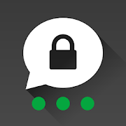
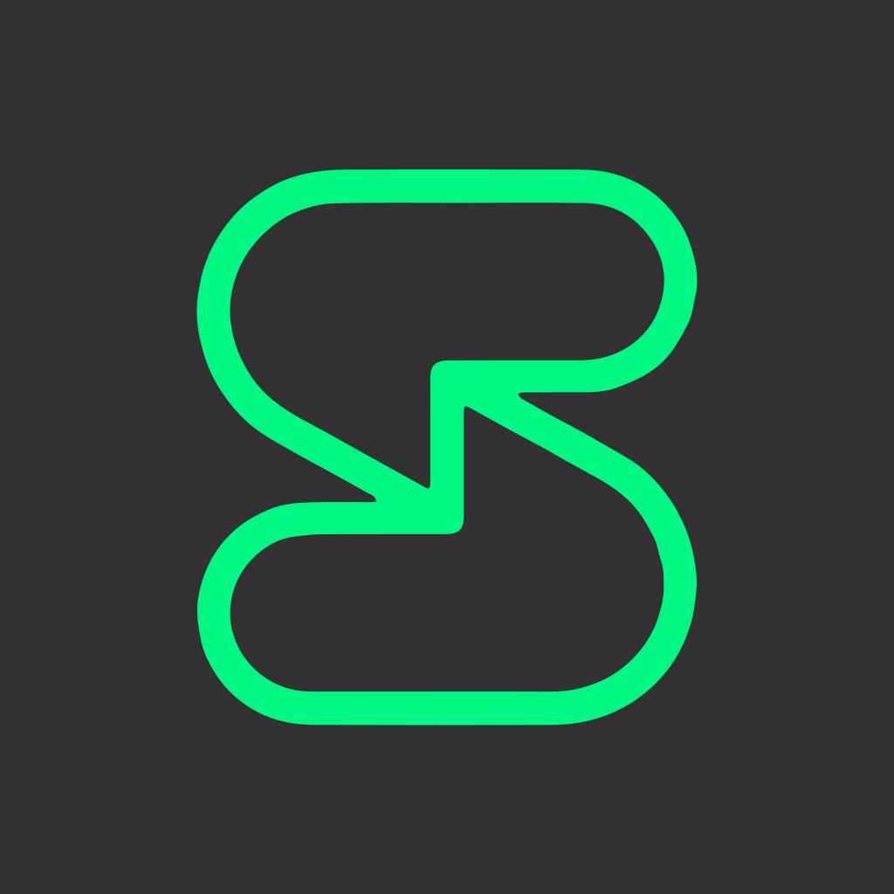

~/tools/messaging
Messengers
last updated 2026-08-02 · 7 recommendations · what changed
Before picking a messenger, frame it as platform replacement:
what you're leaving matters as much as what you're joining. SMS to iMessage is a
meaningful gain. WhatsApp to Signal is a significant one. WhatsApp to Telegram
is not an upgrade at all, it's a lateral move into something
arguably worse, wearing a privacy costume.
before you pick
End-to-end encryption protects message content, not the fact that you
messaged someone, when, or how often. That's metadata, and it's where messengers
really differ. Who can see your social graph matters as much as who can read
your texts.
what actually matters
e2ee by default
Encryption you have to remember to turn on is encryption that's usually off. This single criterion disqualifies more apps than any other.
metadata exposure
What the server learns: your contacts, group memberships, timing patterns. The best designs can't even see who's talking to whom.
identifier required
Needing a phone number ties chats to a real-world identity. Usernames are better; no identifier at all is the frontier.
protocol scrutiny
Open, peer-reviewed protocols (Signal's, MLS) have survived years of cryptographic attention. Custom in-house designs haven't earned that trust.
recommendations

Signal
the default pick
🇺🇸 usae2ee alwaysmetadata-resistantopen sourcefree
Signal is the current gold standard, and not just by reputation: the Signal
Protocol has been cryptographically scrutinized more than any other
consumer messenger and holds up. It's what everyone else borrows. It
keeps almost no metadata (subpoena responses have famously contained two
timestamps), it has sealed sender and disappearing messages, and it looks like
a normal app, which is why you can actually get your group chats to move here.
Use it for anything sensitive; it's reliable cross-platform for everything else.
If you're on Android and want more, Molly is a hardened Signal
fork with an encrypted local database (locked behind a passphrase at rest)
and built-in Tor/Orbot support. Same network, same contacts, sturdier client.
good
- E2EE on absolutely everything: messages, calls, groups, attachments
- Sealed sender and private contact discovery minimize metadata
- Usernames mean you can chat without sharing your number
- Nonprofit, open source, relentlessly audited
mind the
- Phone number still required to register
- Centralized: one service, one US-based operator
- Desktop app must be linked to a phone first

iMessage
the apple-baseline pick
🍎 apple onlye2ee optionalclosed sourcefree
iMessage is a reasonable secondary for everyday conversation between Apple
devices: it's E2EE device-to-device, there's zero setup, and it's a real step
up from SMS or unencrypted RCS. The trust model is simple: you're
trusting Apple entirely. Since iOS 26.5, green-bubble chats with
Android can be end-to-end encrypted over RCS too, but it's beta and both
carriers have to support it, so you'll still fall back to plain SMS when it
isn't available. iCloud backups are a separate trap: they're not E2EE
until you turn on Advanced Data Protection. A useful way to think
about it: Signal for anything sensitive, iMessage as the baseline for people
who won't install Signal.
good
- E2EE by default between Apple devices, no setup at all
- Meaningful upgrade over SMS/RCS for ordinary conversation
- Already installed on the phones your family actually uses
- Beta E2EE RCS now reaches some Android contacts too
mind the
- Without Advanced Data Protection, iCloud backups expose message history, enable it
- E2EE RCS with Android is beta and partial: needs carrier support, and some users report delivery hiccups
- Closed source; trust is entirely in Apple; Apple-only by design
SimpleX
the no-identifier pick
no identifier requirede2ee alwaysopen sourcemetadata-resistantfree
SimpleX is genuinely interesting if your threat model is high: there are
no user IDs whatsoever, not even phone numbers or usernames.
Conversations run over one-way relay queues that nobody can piece together
into a social graph, so the metadata resistance comes from the architecture,
not a policy promise. It's newer and less battle-tested than Signal, but it's
the most privacy-forward design you can get in a consumer messenger right now.
good
- No identifier means nothing to subpoena, leak, or correlate
- Metadata resistance by design, not by promise
- Open source, double-ratchet encryption, self-hostable relays
- Independently audited twice (Trail of Bits); post-quantum-resistant key exchange built in
mind the
- Younger protocol with a shorter audit history than Signal's
- Multi-device and delivery UX still have rough edges
- Small network: you'll be onboarding your contacts yourself
Matrix / Element
the federation pick
federatede2ee optionalself-hostableopen sourcefree
Matrix is a protocol, not a company: like email, anyone can run a server and
talk to every other server. That makes it messaging nobody can switch
off, and the right answer for communities, team chat, and people who
want to own their infrastructure. Know the fine print, though: E2EE is
available but not always on by default (it depends on how the server and
client are set up), and every server in a room can see that room's metadata.
Expect more friction than Signal; it's a different use case, not a replacement.
good
- No central operator: self-host or pick any homeserver
- E2EE in DMs and private rooms (verify your client's defaults)
- Element now requires verified devices for E2EE messages by default
- Rich rooms, threads, and bridges to other networks
- No phone number needed
mind the
- E2EE coverage depends on configuration: not a flat guarantee
- Room metadata (members, timing) spreads across participating servers
- Key verification and device management confuse newcomers
Briar
the off-grid pick
peer-to-peeronion-routedworks offlineopen sourcefree
Briar has no server to subpoena because there is no server: messages travel
peer-to-peer over Tor, or over Bluetooth and local Wi-Fi when the
internet is down or blocked. It's built for activists and journalists
under real pressure. As a daily messenger it's spartan; as infrastructure of
last resort it's one of a kind.
good
- No central anything: nothing to block, seize, or log
- Works without internet via Bluetooth/Wi-Fi mesh
- All traffic over Tor by default; no phone number or email
- Desktop client (Windows/macOS/Linux) now in beta alongside Android
mind the
- Android and a beta desktop client only; iOS still unsupported (platform reasons)
- Both parties must be online to deliver: no server-side queueing
- No voice/video; battery cost from constant Tor connection

Threema
the pay-once pick
🇨🇭 switzerlandno phone numberone-time purchasepartially open source
Threema skips subscriptions entirely: you pay once, get a randomly generated
Threema ID, and you're done. No phone number, no email
required. It's under Swiss jurisdiction and has focused on keeping
metadata minimal for years, so the server learns very little about who's
talking to whom. Most of the client code is open source and independently
audited, though parts of the backend stay closed. Ownership changed in Jan
2026 to Comitis Capital, a German private-equity firm: its second PE owner
since 2020.
good
- No phone number or email needed: random ID is the only identifier
- One-time purchase, not a recurring subscription
- Swiss jurisdiction, strong metadata minimization by design
- Independently audited; most code is open source
mind the
- Small network compared to Signal: onboarding contacts takes effort
- Some backend components aren't open source
- Now owned by German private equity (Comitis Capital), second PE owner since 2020
- One-time cost rose to €6, still real friction next to free competitors

Session
the onion-routed pick
onion-routedno phone numberdecentralizedopen sourcefree
Session routes every message through its own onion-style network of
decentralized service nodes instead of a company-run server,
so there's no central operator to subpoena for your metadata. It's built by
the Session Technology Foundation (formerly the team behind Oxen), and you
don't need a phone number or email: an account is just a generated ID. You'll
occasionally notice the latency the onion routing adds. A 2026 funding crisis
nearly shut the project down entirely; it's still running, but on a much
smaller team.
good
- No phone number, email, or other identifier required
- Onion routing over decentralized service nodes: no central server to compel
- Open source clients and protocol
mind the
- Independent 2026 research found multiple protocol vulnerabilities, including a flaw that could in principle allow network takeover
- Survived a 2026 funding crisis that nearly shut it down; runs on a much smaller team now, plus volunteers
- Onion routing trades some speed for the metadata resistance
- Smaller user base: expect to onboard contacts yourself

Telegram
the one to avoid
e2ee not defaultsecret chats onlycustom mtprotocloud-stored historyfree
Telegram is not a private messenger, and that needs saying clearly because
it's so often and so dangerously mislabeled. Regular chats and all
group chats are server-side encrypted: Telegram holds the keys and can
read them. Only "Secret Chats" are E2EE, they're not the default for
anything, and you effectively can't use them on desktop. The custom MTProto
protocol has had far less audit scrutiny than Signal's. Your messages sit in
Telegram's cloud indefinitely unless you delete them, and the company has
handed user data (IPs and phone numbers) to law enforcement when compelled; the
CEO's 2024 arrest in France produced real policy shifts, not principled
resistance. It's a cloud messenger with a privacy reputation it hasn't
earned. Treat it as social media, never as a Signal replacement.
good
- Huge global user base, channels, and bot ecosystem
- Large file-sharing limits and cross-platform sync
- Familiar, polished UX
mind the
- Regular and group chats are server-side encrypted, not E2EE: Telegram can read them
- Secret Chats are E2EE but not default and unavailable on desktop
- Custom MTProto protocol, far less audited than Signal's
- Cloud history stored indefinitely; user data handed to law enforcement when compelled
at a glance
"metadata exposure" is what the operator could learn, not what they promise to log.
worth knowing
The best messenger is the one your people will use. Signal on
everyone's phone beats a perfect tool nobody installed. Move one group chat at a
time; the family one is usually easiest.
Turn on disappearing messages. Encryption protects messages in
transit; it does nothing about the archive sitting on a stolen or seized phone.
A default timer (a week, say) is cheap insurance.
WhatsApp is better than its owner suggests, and worse than it looks.
It runs the Signal protocol underneath, so content encryption is solid. But
it's Meta-owned, metadata is the product, and the privacy policy reflects that.
Back up your keys. On Matrix especially: lose your key backup
passphrase and your encrypted history is gone for good. Store it in your
password manager.